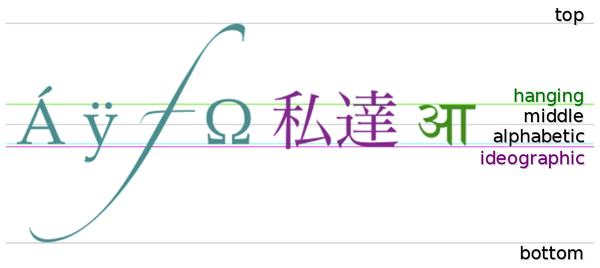

HTML 5 canvas textBaseline 属性
实例
定义用蓝色填充的矩形：
JavaScript:
var c=document.getElementById("myCanvas");
var ctx=c.getContext("2d");
//在位置 y=100 绘制蓝色线条
ctx.strokeStyle="blue";
ctx.moveTo(5,100);
ctx.lineTo(395,100);
ctx.stroke();
ctx.font="20px Arial"
//在 y=200 以不同的 textBaseline 值放置每个单词
ctx.textBaseline="top";
ctx.fillText("Top",5,100);
ctx.textBaseline="bottom";
ctx.fillText("Bottom",50,100);
ctx.textBaseline="middle";
ctx.fillText("Middle",120,100);
ctx.textBaseline="alphabetic";
ctx.fillText("Alphabetic",190,100);
ctx.textBaseline="hanging";
ctx.fillText("Hanging",290,100);
定义和用法
textBaseline 属性设置或返回在绘制文本时的当前文本基线。
下面的图示演示了 textBaseline 属性支持的各种基线：
注释：fillText() 或 strokeText() 方法在画布上定位文本时，将使用指定的 textBaseline 值。
| 默认值： | alphabetic |
|---|---|
| JavaScript 语法： | context.textBaseline="alphabetic|top|hanging|middle|ideographic|bottom"; |
属性值
| 值 | 描述 |
|---|---|
| alphabetic | 默认。文本基线是普通的字母基线。 |
| top | 文本基线是 em 方框的顶端。。 |
| hanging | 文本基线是悬挂基线。 |
| middle | 文本基线是 em 方框的正中。 |
| ideographic | 文本基线是表意基线。 |
| bottom | 文本基线是 em 方框的底端。 |